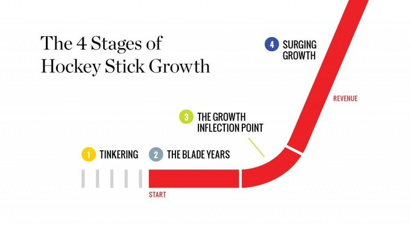

"The Hockey Stick Growth Curve of Trading": worth taking onto the desk?
Trader_XO's X long-form article, posted 28 May 2026 at 20:10 AWST, read in full (about 1,500 words). It has no market calls and no data. It's a trader-development essay, and its four-stage framework is borrowed from a 2016 startup book.
1 · What the article says
Title: The Hockey Stick Growth Curve of Trading, subtitled "Why the Path to Elite Trading Is Non-Linear". Source: https://x.com/Trader_XO/status/2059970520695664814, posted 28 May 2026, 20:10 AWST. The tweet itself has no text; it is just the article. I pulled the full body from the article blocks in the public fxtwitter JSON (https://api.fxtwitter.com/Trader_XO/status/2059970520695664814). The raw text is saved at /workspace/xo-article/article.txt on the box.
Evidence the author gives: his own experience only ("This isn't theory. It's a lived process."). There are no numbers, trades, studies or charts. The images are decorative. The one diagram is captioned "The Hockey Stick Principles, Flatiron Books", and the stage names (Tinkering, Blade Years, Inflection, Surging Growth) come from Bobby Martin's 2016 startup-growth book (https://hockeystickprinciples.com/about/). That book is about company revenue, not trading.

| # | Idea (author's words) | Author's evidence | Desk mapping | Status | Call |
|---|---|---|---|---|---|
| 1 | Growth is non-linear: flat "blade" years, then a break into compounding results. | Personal experience ("a lived process"); borrowed startup framework. | No direct equivalent. An agent has no human learning curve, but the desk's edge only improves through a feedback loop (idea 3). | not applicable | Skip |
| 2 | "A focused playbook with well-defined setups"; strategy-hopping is a trap. | Assertion. | Only partly covered: the desk hunts "A+" setups, but nothing says A+ is a written, enumerated catalogue. | partly new | Adopt |
| 3 | Journalling, post-trade review, "data-driven feedback loops". | "Without reviewing your trades, you lose the opportunity to identify mistakes, repeat strengths…" | Not in the desk description. The wiki logs analyst claims, not the desk's own trades and no-trades. | new | Adopt |
| 4 | "Clear risk parameters"; avoid overleverage and "inconsistent sizing". | "Overleveraging… creates emotional strain that distorts decision-making." | Not in the desk description (may exist elsewhere, unknown). | new | Adopt |
| 5 | "Strategic use of size when conviction is high"; "scale discipline alongside size". | Assertion. | Not in the desk description. | new | Test first |
| 6 | "Knowing when not to trade"; "the discipline to sit out"; overtrading "erodes discipline". | Assertion. | Covered in part: a no-trade with a specific reason is allowed. In tension with "a wake is an order to take" combined with many wakes a day. | partly contradicts | Adopt guardrail |
| 7 | Tilt, breaking risk limits, "you know when to step back", fast recovery from drawdowns. | Assertion. | Contradicts the "big daily loss" wake, which tells the agent to hunt and TAKE a trade right after a loss. | contradicts | Adopt (thresholds: test) |
| 8 | Obsessing over P&L leads to short-term thinking; focus on execution quality, not single outcomes. | Assertion. | Not in the desk description. | new | Test first |
| 9 | "Pre-market routines". | Assertion. | Covered by the pre-market-open broker check. | covered | — |
| 10 | "Entries are planned. Exits are defined." | Assertion. | Covered: exits are an alert plus a working order ticket, and setups are re-checked at the moment of action. | covered | — |
| 11 | "Clear alignment between market conditions and setup triggers." | Assertion. | Covered: the agent re-checks the setup at the moment of action. | covered | — |
| 12 | Elite trading "is not about being right more often… or predicting market tops and bottoms"; the edge "is behavioural". | Assertion. | Matters for how the desk uses XO: it turns his claims into wakes, but by his own account his edge is execution (order flow, DOM), and that doesn't come through in a tweet. | new (source weighting) | Adopt as wiki note |
| 13 | "Evolve without overcomplicating"; maintain "edge integrity". | Assertion. | Not in the desk description. Relevant because desk rules and skills get patched often. | new | Test first (version tags) |
Status key: covered = the desk already does it; contradicts = the desk does the opposite; new = not in the desk description I was given. Some "new" items may already exist in parts of the desk I can't see.
2 · The new ideas worth having
A. Journal every wake: trades and no-trades (ideas 2, 3, 8) Adopt
- What changes
- Every wake writes one structured record: wake type, source analyst and claim id, setup id from a written A+ catalogue, the agent's thesis, stated probability, risk taken, entry/exit fills, and a process grade separate from the P&L. A weekly review computes expectancy and sample size per setup, per analyst, per wake type, and per desk-rule version.
- What it would have added or prevented
- It answers questions the desk can't answer today. Do XO-sourced wakes make money? Which of the six daily hunts ever produce A+ trades? Does the "analyst disagreement" input add or lose money? Without this, idea 13 (edge integrity) and any sizing change can't be tested.
- Independent evidence
- For: investors do get better with experience, though much of the aggregate improvement comes from weak traders quitting, not from learning (Seru, Shumway & Stoffman, Learning by Trading, RFS 2010: https://doi.org/10.1093/rfs/hhp060). For a desk that can't "quit", measurement is the only way to learn. Against or caution: scoring many small slices leads to overfitting. Testing many variants makes some look great by chance (Bailey, Borwein, López de Prado & Zhu, Notices of the AMS 2014: https://www.ams.org/notices/201405/rnoti-p458.pdf).
- Author's own related posts (outside the article)
- On 6 Jun 2026 (20:31 AWST) XO reported about 200 trades since September, a 35% win rate, and max drawdown under 7.5%, saying profit comes "less by being right frequently and more by managing losses well": https://x.com/Trader_XO/status/2063237450751766587. These are self-reported and unaudited.
- Risk
- Small samples. Rules: no setup or analyst gets promoted or dropped on fewer than about 30 trades, and report confidence intervals, not bare hit rates.
B. Change the big-daily-loss wake to "de-risk and review first" (idea 7) Adopt
- What changes
- Today a big daily loss wakes the agent with an order to hunt an A+ trade and take it. Proposed: on that wake the agent first checks open exposure and working exit tickets, writes a loss review, and then can open new risk only under a stricter bar (for example a smaller size cap for the rest of the session). The bar steps down as drawdown deepens.
- What it would have added or prevented
- It stops the desk from automatically adding risk at the moment it's most likely to be wrong about regime, which is the machine version of "going on tilt". I don't have the desk's own P&L history, so I can't name a specific trade it would have prevented (unverified).
- Independent evidence
- For: professional CBOT traders who lost in the morning took more risk in the afternoon (Coval & Shumway, Do Behavioral Biases Affect Prices?, JF 2005: https://doi.org/10.1111/j.1540-6261.2005.00723.x). After losses, people are drawn to bets that offer a chance to break even (Thaler & Johnson, Management Science 1990: https://doi.org/10.1287/mnsc.36.6.643). Optimal strategies under a drawdown limit cut risky exposure as the drawdown floor gets closer (Grossman & Zhou, Mathematical Finance 1993: https://doi.org/10.1111/j.1467-9965.1993.tb00044.x). Against: an AI has no emotions. And loss-triggered de-risking only adds value when returns persist; under a random walk it is a drag (Kaminski & Lo, When do stop-loss rules stop losses?, JFM 2014: https://doi.org/10.1016/j.finmar.2013.07.001). Even so, a prompt that says "hunt and take" after a loss builds in the break-even-seeking pattern whether or not the agent has emotions.
- Risk
- It could miss genuine post-shock opportunities, such as an IV spike that's good for selling premium. That's why the exact thresholds should be tested, not the principle.
C. Risk budget and overtrading guard (ideas 4, 6) Adopt
- What changes
- Set a fixed premium-at-risk per trade, portfolio caps on net delta and vega, and a daily and weekly cap on new-risk count. Track a "take rate" per wake type. If a wake type turns into trades far more often than its journalled expectancy justifies, flag it.
- What it would have added or prevented
- The desk has at least six scheduled hunts a day, plus price alerts, analyst-claim wakes and position wakes, each framed as "take it if A+ exists". This guard stops a high wake count turning into a high trade count.
- Independent evidence
- For: the households that traded most earned 11.4% a year against the market's 17.9% (Barber & Odean, Trading Is Hazardous to Your Wealth, JF 2000: https://doi.org/10.1111/0022-1082.00226). Fewer than 1% of Taiwanese day traders reliably earned net abnormal returns (Barber, Lee, Liu & Odean, JFM 2014: https://doi.org/10.1016/j.finmar.2013.05.006). Partly against: option trading costs are lower than quoted spreads suggest when execution is timed well (Muravyev & Pearson, RFS 2020: https://doi.org/10.1093/rfs/hhaa010). A careful agent pays less per trade, but costs still stack up across many trades.
- Risk
- Hard caps could block a real A+ setup late in the day. Allow an override that has to be justified in the journal.
D. Conviction-scaled sizing (idea 5) Test first
- What changes
- Size scales with the agent's stated probability and payoff, but only after those probabilities have proven calibrated (Brier score or calibration buckets from journal A).
- Independent evidence
- Kelly sizing maximises long-run growth, but full Kelly brings severe drawdowns and depends on accurate edge estimates; fractional Kelly trades growth for safety (MacLean, Thorp & Ziemba, "Good and bad properties of the Kelly criterion": https://www.stat.berkeley.edu/~aldous/157/Papers/Good_Bad_Kelly.pdf). XO's own numbers point the same way. His max drawdown was 3.9% before May and rose to just under 7.5% "when I began building larger swing positions" (6 Jun 2026: https://x.com/Trader_XO/status/2063237450751766587), then to 11% (30 Jun 2026: https://x.com/Trader_XO/status/2071945855016276304). Self-reported.
- Risk
- An LLM's stated confidence is not calibrated by default. Sizing up on uncalibrated conviction is the fastest way to a large drawdown. Paper-test first.
E. Version tags on desk rules (idea 13) Test first
- What changes
- Every change to the desk's prompts, skills or rules bumps a version, and every journal record carries that version, so results can be attributed. The article's "strategy-hopping" trap applies to a desk whose rules are patched often.
- Evidence
- Same overfitting caution as A (Bailey et al. 2014, linked above). XO himself says he resets his journal and datasets "as your process changes" (30 Jun 2026: https://x.com/Trader_XO/status/2071945855016276304). Version tags do the same job without throwing data away.
- Risk
- Low. It's bookkeeping.
F. Weight XO as levels and context, not signals (idea 12) Adopt as wiki note
The article says elite trading isn't about predicting. XO's posts are mostly two-sided "if acceptance above X, then Y; failure, then Z" maps, and his edge is execution (order flow, DOM, a pilot position then adding). So his posts work best on the desk as level maps that feed the TradingView alerts. Treating them as directional claims that force a side is a poor fit. XO is also moving to a "hybrid", more systematic approach (30 Jun 2026, linked above), and on 12 Aug 2026 he wrote "Don't automate an agentic workflow until you've successfully performed it manually enough times to understand what you're automating" (https://x.com/Trader_XO/status/2087598722515378428).
Skipped: idea 1 (the hockey-stick curve itself). Independent evidence mostly cuts against it as a general promise. Of Brazilian day traders who kept going for more than 300 days, 97% lost money (Chague, De-Losso & Giovannetti, Day Trading for a Living?, SSRN 2019: https://papers.ssrn.com/sol3/papers.cfm?abstract_id=3423101). The curve is survivorship: the people who drew it are the ones who made it.
3 · Trader_XO's track record
Method: I pulled XO's dated X posts that have specific levels (Oct 2025 – Sep 2026) and graded each one against Binance spot hourly candles (BTCUSDT, ETHUSDT, via data-api.binance.vision). Rule: a call is right if its stated level printed within the call's own horizon (or about 1–2 weeks if none was given), and before any stated invalidation. It's wrong if the condition triggered but the target never printed. It's unclear if the call was two-sided, its condition never triggered, or the position's exit wasn't disclosed. All times AWST.
| Date (AWST) | Call (short quote) | Price at call | What happened | Grade |
|---|---|---|---|---|
| 7 Oct 2025 17:28 | BTC "120-121s key level… Below that then 116-117 comes into play" https://x.com/Trader_XO/status/1975493312212836639 | $123,862 | Ticked up to $125,126 first, then 117k printed 11 Oct 03:00. Crash low $102,000 on 11 Oct 05:00. | Right |
| 8 Oct 2025 23:32 | BTC "acceptance below [122] then I'm leaning towards… poor lows being traded down into 120s" https://x.com/Trader_XO/status/1975947407817855025 | $122,320 | Bounced to $124,197, then $120,500 printed 10 Oct 00:00. | Right |
| 10 Oct 2025 06:05 | BTC "Breaking below 120s with momentum… we move towards 117s" https://x.com/Trader_XO/status/1976408750702346470 | $121,461 | Broke 120k on 10 Oct 23:00 and hit 117k four hours later (same move as the two calls above, so these are correlated). | Right |
| 26 Nov 2025 21:43 | BTC: losing the 50-week MA "has often signaled a deeper move toward the 200MA or even the 300-week MA" https://x.com/Trader_XO/status/1993677245802512578 | $86,643 | Low of $60,000 in the week of 2 Feb 2026, then $57,800 on 1 Jul 2026 09:00, below the 200-week MA (about $62.7k that week, computed from Binance weekly closes). | Right (long horizon, no date) |
| 27 Nov 2025 21:29 | BTC "92-94K resistance… probable range… [to] lower bounds of 80s" https://x.com/Trader_XO/status/1994035919918104915 | $90,987 | Through 31 Dec: high $94,589, low $83,823. The range held. | Right |
| 11 Dec 2025 11:10 | "$BTC 94k 🧢 Might be the last one for the year" https://x.com/Trader_XO/status/1998953470859391297 | $90,074 | The year's remaining high was $93,555, under 94k. | Right |
| 28 Apr 2026 20:00 | BTC "through the 75.7 level… opens up a thin pathway to 73s" https://x.com/Trader_XO/status/2049096299207655572 | $76,618 | Dipped through to $74,938 (30 Apr 02:00); 73k never printed, and price went to 80k by 4 May. | Wrong |
| 29 Apr 2026 16:26 | BTC "a rotation back higher to trade the recent highs into 80-81" https://x.com/Trader_XO/status/2049404912493080656 | $77,054 | 80k on 4 May 10:00, 81k on 5 May 11:00. | Right |
| 23 May 2026 17:26 | BTC short from 81.5, "impulsive move lower towards monthly value area lows around 71… targeting… 73k" https://x.com/Trader_XO/status/2058117305834389866 | $74,684 | 73k on 28 May, 71.5k on 1 Jun 21:00, then down to $59,131 (6 Jun). Never back above $78,080. | Right, biggest win |
| 18 Jun 2026 03:43 | BTC "Losing and staying below monthly vwap… continuation down towards 60-62k" https://x.com/Trader_XO/status/2067332441488994557 | $65,516 | 62k on 23 Jun 16:00, 60k on 25 Jun 00:00. | Right |
| 24 Jun 2026 23:54 | BTC "59s… through there opens the pathway to 54s later this week" https://x.com/Trader_XO/status/2069811371986804757 | $61,113 | Broke 59k (to $58,115 on 25 Jun); low through 6 Jul was $57,800. 54k never printed. | Wrong |
| 6 Jul 2026 21:20 | BTC "60.5 - 61.3 the zone that needs to hold… Remaining short from 63s" https://x.com/Trader_XO/status/2074121281092366841 | $61,754 | The zone held (low $61,545). Price reached 66k on 21 Jul, so the disclosed short went offside. Exit not disclosed (unverified). | Unclear |
| 11 Sep 2026 17:26 | BTC two-sided: 76.1 / 77.4 long zone, or rotation to 78.4 https://x.com/Trader_XO/status/2098342289944822083 | $77,365 | Both sides traded within an hour. | Unclear |
| 15 Sep 2026 06:09 | BTC 79.5–80k: "Wouldn't be surprised to see it prove difficult to clear on the first attempt" https://x.com/Trader_XO/status/2099621522084159699 | $78,758 | Stalled at $78,568, fell to $74,968, and cleared 80k only on 18 Sep. | Right (soft) |
| 19 Sep 2026 22:30 | BTC: acceptance above 82–83k, then "the range qtr / value area high around 90k"; if rejected, 78.5–79k should hold https://x.com/Trader_XO/status/2101318111370592666 | $81,364 | High of $87,396 (22 Sep); 90k not reached as of 10 Oct, and 78.5k never lost. | Unclear (open) |
| 25 Sep 2026 17:04 | ETH "Acceptance above 2720 then… 29s… Failure… keep this 23-27 range in play" https://x.com/Trader_XO/status/2103410330038628587 | $2,691 | Max $2,777, never 2,900; low $2,406 (9 Oct). He disclosed cutting the long and flipping short that day (https://x.com/Trader_XO/status/2103486773162655811), which went in his favour. Exit not disclosed. | Unclear |
| 29 Sep 2026 18:58 | ETH 29s, then "I'd expect BTC to revisit 86s" https://x.com/Trader_XO/status/2104888418937262197 | $2,718 | The condition never triggered. | Unclear |
How to read that
- Specificity: high on levels, low on commitment. Most posts are conditional maps ("acceptance above X → Y; failure → Z"), which are hard to grade. Five of 17 couldn't be scored, and the "right" grades lean on conditions I had to interpret.
- Edge over chance: for the eight short-term targets that printed, the naive chance of BTC touching a level that far away in the same window ranged from 10% to 59%, about 32% on average. So these weren't trivial nearby levels.
- Independent scorecard: CoinVerdict grades XO at 42.3% directional (n=26, 7-day window with a ±3% band, mostly backtested) against a 31.0% same-direction benchmark. That ranks him 97.7th percentile of 22 tracked accounts. Their only live call was a miss: "Still a range" on 4 Aug 2026, after which BTC rose 14% (https://coinverdict.io/kol/Trader_XO, fetched 10 Oct 2026). Biggles's own wiki scoreboard has 3 XO sources and 1 graded hit (the 20 Apr 2026 BTC ≤70/69/65k call, hit 2 Jun 2026).
- Self-reported P&L: perps account "up around 72%" since September 2025 with an 11% max drawdown (30 Jun 2026: https://x.com/Trader_XO/status/2071945855016276304). Unaudited. An earlier version of that post (https://x.com/Trader_XO/status/2071944171225497826) said "September 2024", and the edit to "2025*" is marked with an asterisk, so it's visible rather than quiet.
Red flags
- After-the-fact position claims. "As someone who shorted 125 before a few days before 10/10" (6 Jun 2026: https://x.com/Trader_XO/status/2063264642504221013). I couldn't find the original entry post at 125k (unverified). A public "121's Half off" on 7 Oct 2025 (https://x.com/Trader_XO/status/1975588142821580803) and "remaining short from the highs" on 11 Oct 2025 (https://x.com/Trader_XO/status/1976680433082314919) back up a short being on before the crash.
- Sponsorships. His streams are "in partnership with @PrimeXBT", a derivatives exchange (for example 13 May 2026: https://x.com/Trader_XO/status/2054556173060227252). He has also promoted the Moonberg/Moonscope scanner (https://x.com/Trader_XO/status/1998705004912238977) and the pepo app. No paid signal group found; the "XO Mentorship" was described as "practically free" (https://x.com/Trader_XO/status/2078065531605733802).
- Edits and reposts: many posts appear twice minutes apart, with a typo-fixed version (for example ETH "1720s" vs "2720s" on 29 Sep 2026). Edits are visible in X's edit history. No deleted calls found, but deletions can't be fully checked.
- Survivorship in the article itself: the hockey-stick story is told by someone who survived. See the Chague et al. base rates above.
Weight to give him: medium-high as a level map for BTC and ETH, medium-low as a source of directional claims that force a side. He says himself that he doesn't call tops and bottoms, and his two-sided posts can't be falsified as trade triggers.
4 · Speculation
- From journal to source trust scores. Once every wake is journalled, each analyst could get a running posterior on expectancy (shrunk toward zero when samples are small). The "analyst disagreement" rule could then side with the analyst whose posterior is better on that kind of claim, not just argue the chart.
- Loss-state machine. Green, amber and red desk states based on drawdown, each with its own A+ bar, size cap and allowed structures (for example red = defined-risk only and no new short gamma). This is the agent version of "know when to step back".
- Calibration-gated sizing. The agent logs a probability on every trade. When its Brier score passes a threshold over 50+ trades, a fractional-Kelly sizing tier unlocks automatically, and it locks again if calibration slips.
- Pilot then add, for options. XO's "pilot position… only adding size once a trade begins proving itself" (6 Jun 2026, linked above) could become: open a small defined-risk spread, then add or roll width only after a confirming re-check. This fits the desk's "re-check at the moment of action" rule naturally.
- Shadow desks. Run a paper copy of the desk on the next rule version alongside the live desk, and promote it only if it beats the live version over a fixed sample. This is idea E as a continuous A/B test.
- "Hockey stick" for an agent. If the desk's edge improves at all, it will probably come in steps when a feedback signal clears its noise threshold, not gradually. A regime change could also flatten the curve again. That's why journal resets should be version tags, not deletions.
- Using XO as a decision gate, not a signal. XO's own stated AI direction is "decision gates that gradually remove everything irrelevant" (7 Aug 2026: https://x.com/Trader_XO/status/2085750399319892374). The desk could use his levels as gates that filter its six scheduled hunts, not as wakes in their own right.
5 · What I couldn't verify
- The original 125k BTC short entry post (Oct 2025): not found. Only the partial-close and "remaining short" posts are public.
- Exits for the 63k BTC short (Jul 2026) and the ETH flip-short (Sep 2026): not disclosed.
- XO's P&L figures (72%, 11% max drawdown, 35% win rate, ~200 trades): self-reported, no audit found.
- Whether the desk already has a journal, risk caps or rule versioning: not stated in the brief, so those ideas are marked "new" on the description I was given.
- My call sample comes from keyword searches of X posts (25 results per window), not his full timeline, so selection bias is likely.